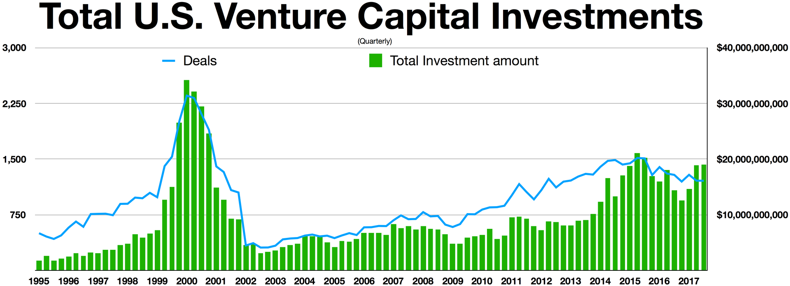
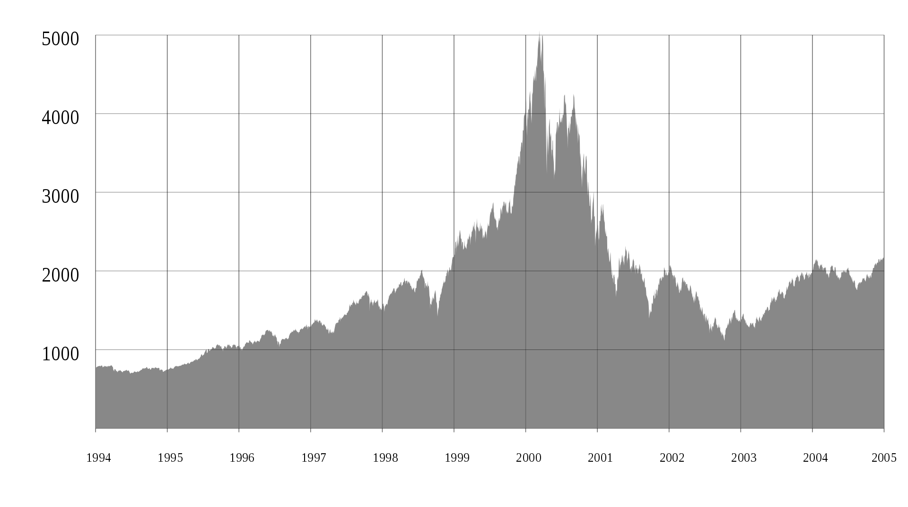

G
o
o
g
l
e
!
Showing result 1-1 of approximately 1 for "How did the dot-com bubble crash?". Search took 0.03 seconds.
THE DOT-COM BUBBLE CRASH
In the late 1990s there was a huge boom in the stock market centered around new and trendy internet companies. Every investor wanted to get in on the action, based on the belief that this new technology would revolutionize the World. Even though the belief turned out to be correct the bubble got too big and had to go down at some point. That point came in the year 2000.
What was the DOT-COM bubble?
The dot-com bubble was a historic speculative bubble in the stock market which occurred in the years 1995-2000. It happened because of the perfect combination of a new and exciting technology being utilized in companies, rapid growth in user base for the Internet, record-low interest rates and the interest of venture capital companies.
It meant that the newly founded startups in the industry not only got a lot of investment money from Venture Capital companies but their stock prices were also soaring because of overall excitement about the technology. With all of that funding coming in the companies did not have to have working products or business plans and did not even have to make a profit. And there was a lot of those companies.
The crash
So we are in the year 2000, there is a lot of unprofitable companies without a proper business plan but the markets are still bullish. However, there is some uncertainty in the air. The Federal Reserve in the USA has been raising the interest rates for some time now, some people fear the Year 2000 problem so the markets become more and more volitile.
And then the harsh reality struck the market. In march it was announced that Japan had entered a recession and Barron's released an article titled "Burning Up; Warning: Internet companies are running out of cash -- fast". The article was about how the dot-com companies were running out of cash and that they would need to raise more money. A business intelligence company MicroStrategy announced that it would revise its financial statements after overstating their performance. Their stock price fell by 62% in one day! And what is more, The Federal Reserve raised the interest rates again and it was expected to keep doing so.
Then another hammer dropped - a court ruled that Microsoft was guilty of monopolization in violation of the Sherman Antitrust Act. Many investors were afraid about Microsoft and the technology sector in general. It resulted in a 15% drop in value of Microsoft shares in one day with NASDAQ as a whole dropping by 8% the same day. The sell-off started and it showed no signs of stopping and the venture capital money slowly started drying up as you can see in the graph below:

Next 2 years were a dramatic time for the stock market. Many of previously high-flying companies went bankrupt and trillions of dollars of value was wiped out. You can see that happening on the graph of NASDAQ index below:

By November 2000 $1.755 trillion was wiped out and by November 2002 $5 trillion was wiped out. The NASDAQ index fell by 78% from its peak. The crash was so severe that it took 15 years for the index to recover to its previous peak.
The Aftermath
The bubble crash was a huge event in the history of the stock market. It was the first time that technology stocks showed their influence in the world of finance. The crash delt a huge blow to the trust of investors in the technology sector in the stock market.
The impact of the crash on the economy was also great - many related sectors like marketing and shipping also were impacted by the crash. There were layoffs of programmers that resulted in lower university enrollment in computer science degrees that set back the industry a bit. About 48% of dot-com comapnies got their valuations severely reduced but survived the crash.
The economy was cleaned from unprofitable companies working only because of debt and investment not because of their products and services.
The crash also triggered serious government action against several comapnies and their management accused of fraudulent behaviour that resulted in many large fines. The crash and subsequent financial scandals of Enron and WorldCom also resulted in the Sarbanes-Oxley Act which was a law that increased the requirements for public companies and their management.